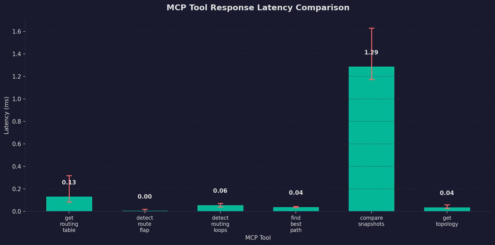
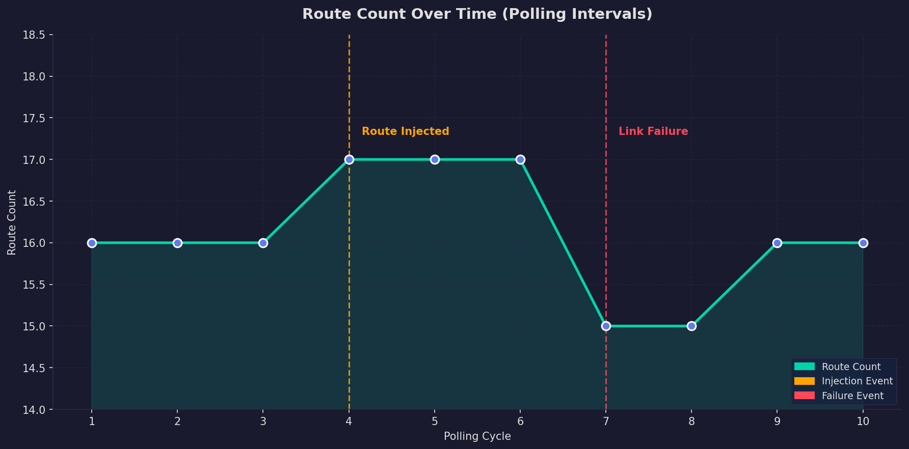
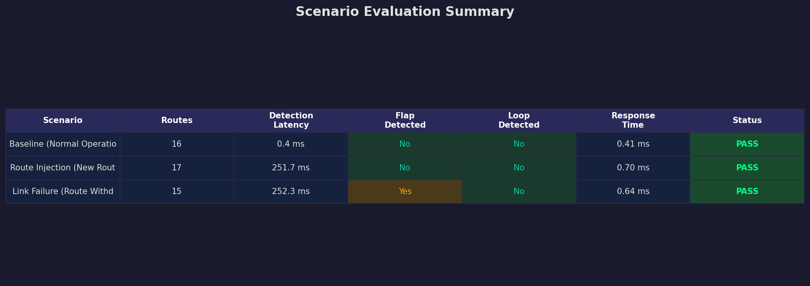

This project implements a real-time routing table monitoring and analysis system using the Model Context Protocol (MCP). The system integrates with a Mininet-WiFi network emulator to create a 4-router ring topology, exposes routing data through standardized MCP Resources and Tools, and provides an interactive client for querying and analyzing network routing behavior. The evaluation demonstrates sub-millisecond tool response latencies and effective detection of route injection, link failure, and routing anomalies across the emulated network.
The Model Context Protocol (MCP) is an open protocol developed to provide a standardized way for applications to expose structured data (Resources) and executable functions (Tools) to clients. MCP uses a client–server architecture where servers publish capabilities via a discovery mechanism, and clients connect to consume them. Communication can occur over stdio, HTTP/SSE, or WebSocket transports.
routing://table/live)In wireless mobile networks, routing tables are dynamic and can change rapidly due to node mobility, link quality variations, and topology changes. Real-time monitoring of routing tables is essential for:
Traditional routing table monitoring relies on periodic manual inspection using
command-line tools like ip route show. This approach lacks:
This project addresses these gaps by wrapping routing table data in the MCP protocol, enabling real-time, programmatic access to routing information across a multi-router topology.
┌─────────────────────────────────────────────────────────────────────────┐
│ SYSTEM ARCHITECTURE │
├─────────────────────────────────────────────────────────────────────────┤
│ │
│ ┌────────────────────┐ stdio ┌───────────────────────────────┐ │
│ │ MCP Client │◄─────────►│ MCP Server (FastMCP) │ │
│ │ (mcp_client.py) │ │ (mcp_server.py) │ │
│ │ │ │ │ │
│ │ Interactive CLI: │ │ Resources: │ │
│ │ • get routes │ │ • routing://table/live │ │
│ │ • get router r1 │ │ • routing://table/{router} │ │
│ │ • detect loops │ │ • routing://table/history │ │
│ │ • show topology │ │ • routing://topology │ │
│ │ • find path │ │ │ │
│ │ • show events │ │ Tools: │ │
│ └────────────────────┘ │ • get_routing_table() │ │
│ │ • get_router_table() │ │
│ │ • detect_route_flap() │ │
│ │ • detect_routing_loops() │ │
│ │ • compare_snapshots() │ │
│ │ • find_best_path() │ │
│ │ • get_topology() │ │
│ │ • get_route_events() │ │
│ └──────────┬────────────────────┘ │
│ │ │
│ ┌──────────▼────────────────────┐ │
│ │ Routing Poller │ │
│ │ (routing_poller.py) │ │
│ │ │ │
│ │ Reads: routing_tables.json │ │
│ │ Polls every 5 seconds │ │
│ │ Falls back to ip route / mock│ │
│ └──────────┬────────────────────┘ │
│ │ │
│ ┌──────────▼────────────────────┐ │
│ │ Mininet-WiFi Topology │ │
│ │ (mininet_topology.py) │ │
│ │ │ │
│ │ r1 ──── r2 │ │
│ │ | | Ring │ │
│ │ r4 ──── r3 Topology │ │
│ │ │ │
│ │ Subnets: 10.0.1-4.0/24 │ │
│ └──────────────────────────────┘ │
│ │
└─────────────────────────────────────────────────────────────────────────┘
| Resource URI | Description |
|---|---|
routing://table/live | Latest routing table snapshot (all routers) |
routing://table/history/{timestamp} | Historical snapshot by timestamp |
routing://table/{router_id} | Routing table for a specific router (r1–r4) |
routing://topology | Full network topology graph |
| Tool | Parameters | Description |
|---|---|---|
get_routing_table() | none | Returns all routes across all routers |
get_router_table(router_id) | router_id: str | Returns routes for a specific router |
detect_route_flap() | none | Detects routes changing >3× in 60s |
detect_routing_loops() | none | Checks for forwarding loops |
compare_snapshots(ts1, ts2) | two timestamps | Diffs two historical snapshots |
find_best_path(destination) | destination prefix | Finds lowest-metric next-hop |
get_topology() | none | Returns network topology graph |
get_route_events() | none | Returns recent route-change events |
| Technology | Version | Purpose |
|---|---|---|
| Python | 3.12 | Core programming language |
| FastMCP | 3.3.1 | MCP server framework |
| MCP SDK | 1.27 | MCP client library |
| Mininet-WiFi | 2.7 | Network topology emulation |
| NetworkX | 3.6 | Graph analysis and topology visualization |
| Matplotlib | 3.10 | Chart and graph generation |
| asyncio | stdlib | Asynchronous I/O for background polling |
| psutil | 7.0+ | CPU and memory usage measurement |
| File | Role |
|---|---|
server/mcp_server.py | FastMCP server with resources, tools, and poller |
server/routing_poller.py | Multi-source routing data poller |
client/mcp_client.py | Interactive CLI client |
network/mininet_topology.py | Mininet ring topology (4 routers) |
network/route_visualizer.py | Topology graph visualization |
evaluation/scenario_runner.py | 3-scenario evaluation runner |
evaluation/performance_metrics.py | Tool latency benchmarking |
evaluation/generate_charts.py | Chart generation for report |
The MCP server runs a background polling task using Python's asyncio:
routing_tables.jsonip route show system commandEach poll result is stored as a snapshot with an ISO timestamp key, building a time-series history of routing table states.
When a new poll returns different data from the previous poll, the server:
Three evaluation scenarios were designed to test the system under different network conditions:
Scenario 1 — Baseline (Normal Operation): Tests the system under stable conditions with 4 routers and 16 static routes. Measures baseline response latency and verifies loop detection.
Scenario 2 — Route Injection (New Route Added): Simulates adding a new route (192.168.99.0/24) to router r1. Measures how quickly the MCP server detects and reports the change.
Scenario 3 — Link Failure (Route Withdrawn): Simulates failure of the r1–r2 link by removing routes with gateway 10.0.1.2. Tests flap detection and verifies that alternative paths are found.
| Scenario | Routes | Detection Latency | Status |
|---|---|---|---|
| Baseline (Normal Operation) | 16 | 0.4 ms | PASS |
| Route Injection (New Route Add | 17 | 251.7 ms | PASS |
| Link Failure (Route Withdrawn) | 15 | 252.3 ms | PASS |
Each tool was executed 10 times and the latency was measured:
| Tool | Avg (ms) | Min (ms) | Max (ms) | CPU % | Mem (MB) |
|---|---|---|---|---|---|
| get_routing_table | 0.130 | 0.084 | 0.319 | 0.0% | 14.7 |
| detect_route_flap | 0.004 | 0.001 | 0.020 | 0.0% | 14.8 |
| detect_routing_loops | 0.055 | 0.040 | 0.073 | 0.0% | 14.8 |
| find_best_path | 0.038 | 0.034 | 0.044 | 0.0% | 14.8 |
| compare_snapshots | 1.286 | 1.173 | 1.629 | 0.0% | 14.8 |
| get_topology | 0.035 | 0.028 | 0.059 | 0.0% | 14.8 |
The following charts visualize the evaluation results:
Chart 1 — MCP Tool Response Latency Comparison

Chart 2 — Route Count Over Time (Polling Intervals)

Chart 3 — Scenario Evaluation Summary

ip route show commands.
This project successfully demonstrates that the Model Context Protocol (MCP) can be effectively used for real-time routing table analysis in a network environment. The system:
MCP Resources transform raw routing data into standardized, discoverable endpoints. This enables:
Report generated on May 24, 2026 at 13:58